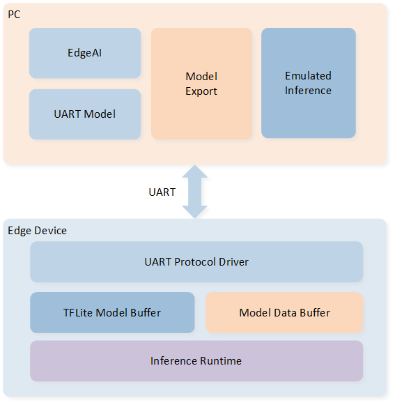
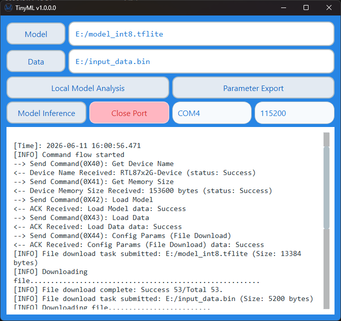

TinyML 端侧调试
该示例演示了如何使用 TinyML 库，在 RTL87x2G 上实现与上位机（PC）之间的串口通信，支持上位机通过自定义 UART 协议向设备下发模型文件和输入数据，并由设备完成 TFLite 推理后将结果上报给上位机。
示例中设备通过 UART 接口接收上位机发送的数据包，经协议解析后依次执行模型加载、参数配置和推理操作，并将推理结果、内存用量、推理耗时等信息通过应答数据包回传给上位机。
系统架构如下图所示，整体分为 PC 端主机与 Edge Device 端侧设备两部分，双方通过 UART 接口进行双向通信。
PC 端主机包含以下三个模块：
EdgeAI 和 UART Model：分别负责模型管理与设备通信，通过 UART 协议与端侧设备进行指令交互和数据传输。
Model Export：将训练调试完成的 TFLite 模型导出为 C 数组格式，便于直接集成到嵌入式工程中。
Emulated Inference：在 PC 端复刻端侧设备的模型推理流程，无需连接端侧设备即可快速验证模型正确性。
Edge Device 端侧设备包含以下组件：
UART Protocol Driver：实现自定义 UART 通信协议，负责数据包的收发、解析、重传与组包。
TFLite Model Buffer / Model Data Buffer：接收、管理并存储 PC 端下发的模型文件与推理输入数据。
Inference Runtime：基于 TFLite 的推理引擎，在端侧加载 PC 端下发的模型数据并执行实际推理运算。

系统架构图
上位机界面展示如下：

上位机界面
上位机各栏位与按钮的含义如下表：
栏位 / 按钮 |
说明 |
|---|---|
Model |
选择要部署到设备的 TFLite 模型文件（ |
Data |
选择推理使用的输入数据文件（ |
Local Model Analysis |
本地仿真推理：不连接设备，直接在 PC 端复刻推理流程，快速验证模型正确性 |
Parameter Export |
模型导出：将 TFLite 模型导出为 C 数组（生成 |
Model Inference |
设备端推理：将所选模型与数据下发至设备执行 TFLite 推理，并回传、展示推理结果、耗时与内存用量 |
Open Port / Close Port |
打开或关闭串口连接 |
COM 端口 |
选择与设备连接的串口号（如 COM4） |
波特率 |
设置串口通信波特率，需与设备端一致（默认 115200） |
日志区 |
显示上位机与设备之间的指令交互过程、推理结果及错误信息 |
环境需求
该示例支持以下开发套件：
Hardware Platforms |
Board Name |
|---|---|
RTL87x2G HDK |
RTL87x2G EVB |
更多信息请参考 快速入门。
硬件连线
设备通过 UART 与上位机进行通信，接口引脚如下表：
引脚名称 |
PIN |
含义 |
|---|---|---|
UART_TX |
P3_0 |
发送数据 |
UART_RX |
P3_1 |
接收数据 |
GND |
GND |
参考地 |
通信参数：波特率 115200，数据位 8，停止位 1，无奇偶校验。
编译和下载
该示例的工程路径如下:
Project file: samples\tinyml\tinyml_edge\proj\rtl87x2g\mdk
Project file: samples\tinyml\tinyml_edge\proj\rtl87x2g\gcc
请按照以下步骤操作构建并运行该示例:
打开工程文件。
按照 快速入门 中 编译 APP Image 给出的步骤构建目标文件。
编译成功后，在路径
mdk\bin或gcc\bin下会生成 app binapp_MP_xxx.bin文件。将 EVB 的 P3_0（TX）和 P3_1（RX）通过 USB-UART 适配器连接至上位机串口。
按下复位按键，开始运行。
测试验证
打开上位机软件 TinyML_Host，选择要测试的模型文件（.tflite）和输入数据文件（.bin），点击 模型推理 (Model Inference) 按钮，上位机将自动完成以下完整推理流程。
上位机推理日志示例如下，完整流程依次为：获取设备名称 → 查询内存 → 加载模型 → 加载数据 → 配置参数 → 下载文件 → 触发推理 → 接收结果。
[Time]: 2026-06-11 16:00:56.471 [INFO] Command flow started --> Send Command(0X40): Get Device Name <-- Device Name Received: RTL87x2G-Device (status: Success) --> Send Command(0X41): Get Memory Size <-- Device Memory Size Received: 153600 bytes (status: Success) --> Send Command(0X42): Load Model <-- ACK Received: Load Model data: Success --> Send Command(0X43): Load Data <-- ACK Received: Load Data data: Success --> Send Command(0X44): Config Params (File Download) <-- ACK Received: Config Params (File Download) data: Success [INFO] File download task submitted: E:/model_int8.tflite (Size: 13384 bytes) [INFO] Downloading file.................................................... [INFO] File download complete: Success 53/Total 53. [INFO] File download task submitted: E:/input_data.bin (Size: 5200 bytes) [INFO] Downloading file...................... [INFO] File download complete: Success 21/Total 21. [INFO] Model Inference command started --> Send Command(0X45): Model Inference. <-- ACK Received: Model Inference data: Success [INFO] Command flow completed <-- [Event 0X55] Inference Result: [0.97, 0.00, 0.03, 0.00, 0.00] <-- [Event 0X51] InferTime: xxxx cycles <-- [Event 0X52] UniqueOps: [RESHAPE,CONV_2D,MAX_POOL_2D,FULLY_CONNECTED,SOFTMAX] <-- [Event 0X50] Arena Size: 15220 Bytes
若数据包解析失败，则触发重传机制，在 Debug Analyzer 中可观察到以下输出。
IO_MSG_UART_RX_DONE IO_MSG_UART_DATA_PARSER_FAILED,retry
协议说明
UART 数据包格式如下：
字段 |
长度 |
说明 |
|---|---|---|
帧头 |
2 字节 |
固定为 0xAA 0xBB |
数据长度 |
2 字节 |
有效数据区长度 |
序列号 |
2 字节 |
数据包序号，用于 ACK 匹配和重传 |
命令字 |
1 字节 |
指令类型，见下表 |
数据区 |
N 字节 |
命令附带的有效载荷 |
CRC |
2 字节 |
数据校验 |
帧尾 |
1 字节 |
固定为 0xCC |
支持的命令如下：
命令名称 |
命令字 |
说明 |
|---|---|---|
GET_DEVICE_NAME |
0x40 |
获取设备名称 |
GET_MEM_SIZE |
0x41 |
获取可用内存大小 |
LOAD_MODEL |
0x42 |
加载 TFLite 模型文件 |
LOAD_DATA |
0x43 |
加载推理输入数据 |
CONFIG_PARAM |
0x44 |
配置推理参数 |
MODEL_INFER |
0x45 |
执行推理 |
DOWNLOAD_MODEL_FILE |
0x46 |
下载模型文件到设备 |
DOWNLOAD_DATA_FILE |
0x47 |
下载数据文件到设备 |
设备主动上报的事件码如下：
事件名称 |
事件码 |
说明 |
|---|---|---|
REPORT_ARENA_SIZE |
0x50 |
上报 Tensor Arena 内存使用量 |
REPORT_INFER_CYCLES |
0x51 |
上报推理耗时（CPU 周期数） |
REPORT_OPS_LIST |
0x52 |
上报模型算子列表 |
REPORT_QUANT_PARAMS |
0x53 |
上报量化参数 |
REPORT_INFER_RESULT |
0x55 |
上报推理结果 |
REPORT_PROFILER |
0x56 |
上报各算子 Profiler 性能数据 |
代码介绍
该章节分为以下几个部分：
源码路径
工程路径:
sdk\samples\tinyml\tinyml_edge\proj源码路径:
sdk\samples\tinyml\tinyml_edge\src
该工程的工程文件代码结构如下：
└── Project: tinyml_edge
└── secure_only_app
├── Device includes startup code
├── startup_rtl.c
├── system_rtl.c
└── stdlib_wrapper.c
├── CMSE Library Non-secure callable lib
└── ROM_CMSE_Lib.o
├── lib includes all binary symbol files that user application is built on
├── ROM_NS.lib
├── lowerstack.lib
├── rtl87x2g_sdk.lib
└── gap_utils.lib
├── driver includes all peripheral drivers used by the application
├── rtl_pinmux.c
├── io_dlps.c
├── rtl_nvic.c
├── rtl_rcc.c
└── rtl_uart.c
├── app includes the tinyml user application entry
└── main.c
├── usart_module includes the UART transport and packet parsing
├── io_uart.c
├── uart_packet_parser.c
└── ts_queue.c
├── mem_module includes the PSRAM heap and memory hooks
├── psRam_heap.c
├── ts_mem.c
└── malloc_override.c
└── tinyml_main includes the tinyml inference implementation and dependent libraries
├── tinyml_main.c
├── model_process.cpp
└── libts_realtek_cm55.lib
└── Project: tinyml_edge
└── secure_only_app
├── Device includes startup code
├── startup_rtl.c
└── system_rtl.c
├── CMSE Library Non-secure callable lib
└── ROM_CMSE_Lib.o
├── lib includes all binary symbol files that user application is built on
├── libROM_NS.a
├── liblowerstack.a
├── librtl87x2g_sdk.a
└── libgap_utils.a
├── driver includes all peripheral drivers used by the application
├── rtl_pinmux.c
├── io_dlps.c
├── rtl_nvic.c
├── rtl_rcc.c
└── rtl_uart.c
├── app includes the tinyml user application entry
└── main.c
├── usart_module includes the UART transport and packet parsing
├── io_uart.c
├── uart_packet_parser.c
└── ts_queue.c
├── mem_module includes the PSRAM heap and memory hooks
├── psRam_heap.c
├── ts_mem.c
└── malloc_override.c
└── tinyml_main includes the tinyml inference implementation and dependent libraries
├── tinyml_main.c
├── model_process.cpp
└── libts_realtek_gcc_cm55.a
初始化
设置 CPU 工作频率为 125 MHz，并初始化 DWT 时钟周期计数器。
调用
uart_init初始化 UART（P3_0 TX / P3_1 RX，波特率 115200）。创建 IO 消息队列（容量 0x30 条消息），用于接收 UART 中断回调发出的事件消息。
创建超时定时器（8000 ms），用于等待 ACK 应答超时处理。
uart_init(); os_msg_queue_create(&tinyml_queue_handle, "TSQ", MAX_NUMBER_OF_IO_MESSAGE, sizeof(T_IO_MSG)); os_timer_create(&xUartTimeoutTimerHandle, "timeout Timer", 1, 8000, false, ts_timer_cb);
功能实现
主任务循环阻塞等待 IO 消息队列。当 UART 接收完成（
IO_MSG_UART_RX_DONE）时，从全局数据链表中取出接收到的原始字节，调用uart_rx_data_parse进行协议解析。协议解析成功（
IO_MSG_UART_DATA_PARSER_SUCCESS）后，执行对应命令（加载模型、加载数据、执行推理等），并通过uart_send_with_ack将应答数据包回传给上位机，支持超时重传。协议解析失败（
IO_MSG_UART_DATA_PARSER_FAILED）时，触发重传请求。if (event.subtype == IO_MSG_UART_RX_DONE) { /* uart rx data parse */ } else if (event.subtype == IO_MSG_UART_DATA_PARSER_SUCCESS) { /* execute command and reply */ } else if (event.subtype == IO_MSG_UART_DATA_PARSER_FAILED) { /* trigger retransmission */ }
上位机通过
UART_CMD_CONFIG_PARAM（0x44）和文件下载命令将模型文件与输入数据写入端侧设备缓冲区（model_buf/data_buf）。端侧设备收到UART_CMD_MODEL_INFER（0x45）后，调用MinimalInferenceWithTime完成推理：注册模型和内存分配钩子，尝试不同 Arena 大小（192 KB→128 KB→96 KB）初始化推理引擎，调用ts_realtek_invoke执行推理，最后将推理结果、内存用量、算子信息等通过事件包回传给上位机。